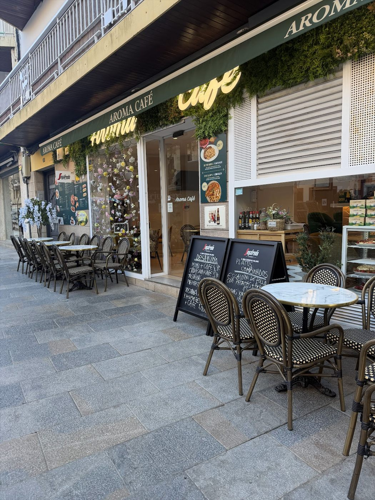
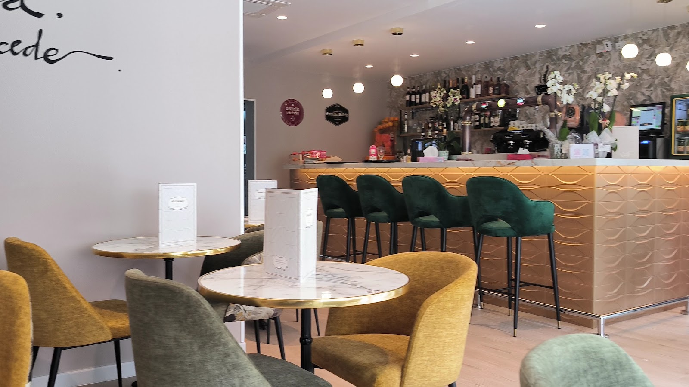
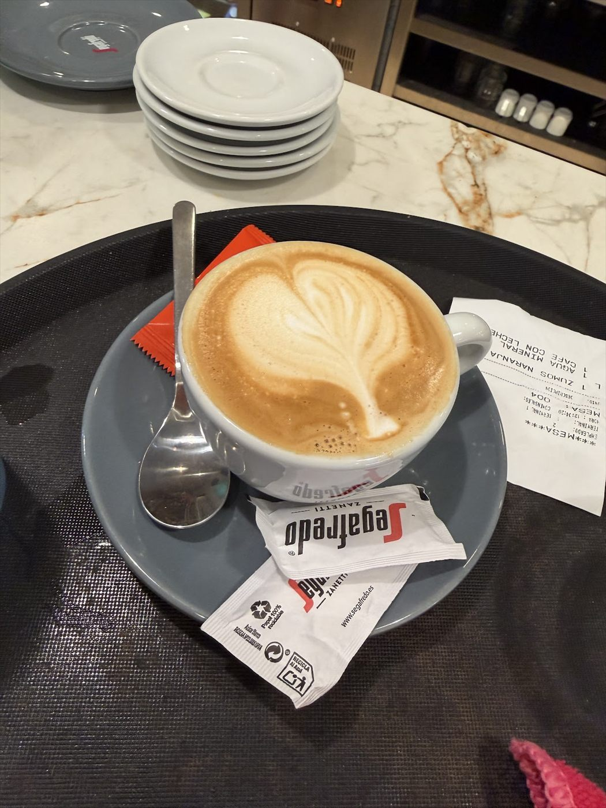
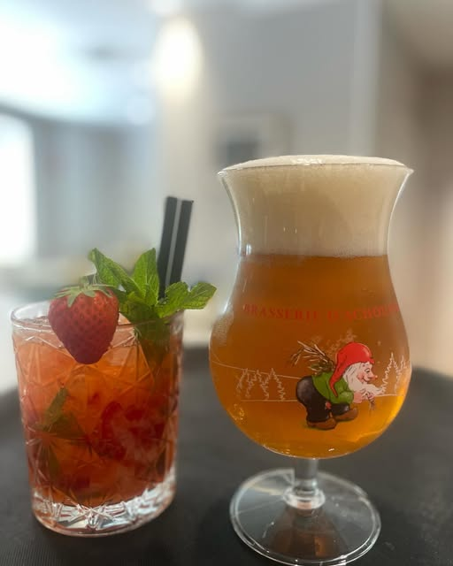

Cafetería · bar · restaurante · Blanes
Aroma Café Blanes
Del primer café de la mañana al último cóctel de la noche, en pleno Passeig de Dintre y a un paso del mar. Hecho con cariño, puntada a puntada.
Bienvenidos

Todos los días 8:30 – 23:00
Un sitio para quedarse
Mesas al sol,
sillas de terciopelo
y buen café
Barra de cerámica ondulada, sillas mostaza y verde botella, mármol y flores. Aroma es ese café de la calle de dentro de Blanes donde desayunas sin prisa, vuelves a por unas tapas y te quedas a la puesta de sol con un mojito de fresa.



La carta, bordada
Elige un hilo.
Lo bordamos al momento.
Pregunta por la carta del día y los precios en barra o por teléfono.
Nuestra pared
Momentos enmarcados
4,6★ · 546 opiniones en Google
Lo que dicen de Aroma
«Excelente servicio! Excelente café! La pastelería estaba muy buena y en general los platos tenían una muy buena pinta. Todo se veía fresco, el ambiente y el local estaban súper limpios y ordenados. […]»Diannis · Google ★★★★★
«Que lugar tan acogedor, la comida espectacular, deliciosa, riquísima. La atención de las chicas ni hablar, súper atentas y amables […] Súper súper recomendado en Blanes. 100/10»Lina Marcela · Google ★★★★★
«Muy lindo sitio con mesas al aire libre. […] Excelente calidad-precio. Muy buena y amable la atención!»Daiana · Google ★★★★★
«También pedimos un sandwich de lomo/bacon/queso y era super grande.»Reseña en Google
«Un lugar tranquilo, la comida deliciosa el pulpo y calamar recomendado.»Reseña en Google
«Los camareros muy atentos y buen café.»Reseña en Google
Ven a vernos
Passeig de Dintre, 4
Blanes
- Horario Todos los días de 8:30 a 23:00
- Teléfono 972 74 66 43
- Terraza Mesas al aire libre en la calle peatonal
- Bienvenidos
- Benvinguts
- Bienvenue
- Welcome
- Bine ați venit